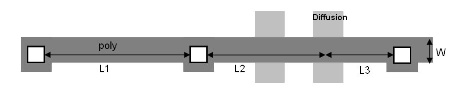

|
 |
 |
||||||
|
|
|
||||||
This constraint specifies the maximum length for shapes on certain layers connecting contacts or delivering current to device gates.
The rule only applies if the width of the layer in question is less than a certain width. This maximum length is measured between two contacts, as well as from any point inside a gate shape to the nearest contact.
This constraint is a three-layer oaLayerArrayConstraint. The first layer is the poly routing layer. The second layer is the cut layer. The third layer would be the gate forming layer, e.g. active or oxide. The check would be between the edges of layer2 along layer1. And from any point of layer3 over layer1, along layer1.
| Constraint type: | oaLayerArrayConstraint (Number of layers: 3) |
| Value types: | oaIntValue |
| Database types: | oaDesign, oaTech |
| Object types: | oaAppObject |
The following value types are supported by this constraint:
This value specifies the maximum allowed length.
Units: DBU
The following parameters are supported by this constraint:
| Name | Value Type | Units | Default | Description |
|---|---|---|---|---|
| width oacWidthConstraintParamType |
oaIntValue | DBU | none |
The constraint applies If the layer1 shape width is less than this value. |

Copyright 2002 - 2010 Cadence Design Systems, Inc.
All rights reserved.